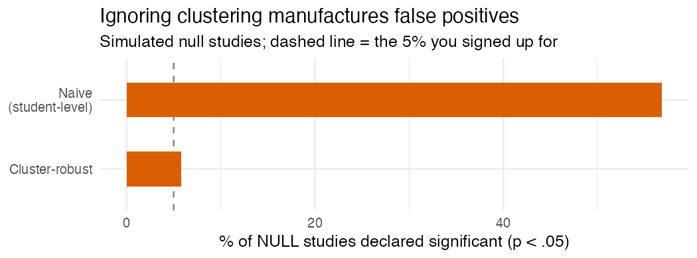

Students aren’t independent: the clustering mistake that makes everything look significant
Sixty schools, three thousand students, and a p value with more zeros after the decimal than you have ever earned honestly. It feels amazing. I’ve had that little rush, the one where you think oh, this is going in the abstract.
I’m sorry to tell you it’s frequently a lie, and the lie is baked into the very first thing you assumed: that you have three thousand independent pieces of information.
You don’t.
Why “n = 3,000” is fiction
Kids in the same school resemble each other. Same teachers, same building, same neighborhood, same everything. So each extra student from a school you’ve already sampled tells you less than a brand new, unrelated student would. Regression assumes your rows are independent. When they’re clustered and you shrug and run it anyway, your standard errors come out too small, your test statistics too big, and out the other end pours a parade of “significant” effects that are mostly just the model fooling itself.
How much smaller depends on the intraclass correlation, the ICC, which is the share of the variation that lives between schools rather than within them. A little clustering barely dents you. A lot of it quietly guts your real sample size down toward the number of schools rather than the number of students.
The machinery, quickly
ICC measures how much students within a cluster move together. The design effect turns that into how badly your naive standard errors lie. Cluster robust standard errors and multilevel models are the two standard fixes (robust SEs patch the uncertainty; multilevel models patch it and let you study how schools differ). And if you’ve only got a handful of clusters, even robust SEs get shaky, and you reach for a wild cluster bootstrap.
Watch it happen
This is my favorite part, because it’s so stark. Sixty schools, fifty kids each, a school level treatment, and a true effect of exactly zero. The within school correlation gives an ICC around 0.26, a design effect of roughly 14, so those 3,000 students carry about as much information as 210.
One representative null study:
m <- lm(y ~ treat, data = study) # student level, ignores clustering
sqrt(diag(vcov(m)))["treat"] # naive SE
sqrt(diag(sandwich::vcovCL(m, cluster = ~school)))["treat"] # cluster robust SE| Standard error | SE | p value |
|---|---|---|
| Naive (student level) | 0.043 | < 0.0001 |
| Cluster robust (school) | 0.157 | 0.167 |
Same estimate, same data. The naive version is screaming significance. The honest version shrugs, correctly, because there is nothing there.
And it’s not one unlucky draw. Across 600 simulated null studies:

The naive analysis declares a significant effect in 57% of studies where the truth is nothing. 57 percent. The cluster robust version sits at 6%, right about the 5% you signed up for. If you ignore clustering, “p < .05” doesn’t mean what you think it means. It barely means anything.
What to do
Cluster at the level treatment was actually assigned (rolled out by school? then school, not student). Report the ICC so your reader knows how much this even matters here. Watch out when you’ve only got a few clusters. And if you genuinely care about how schools differ, not just correcting for it, go multilevel.
Before you celebrate a tiny p value, just ask where the rows came from. In education they’re almost always nested, which means “n” is not the number of students, and significance computed as if it were is significance you didn’t earn.
I build baselinr and I’m building a cohort course on running education evaluations you can actually trust. subscribe via RSS to follow along.